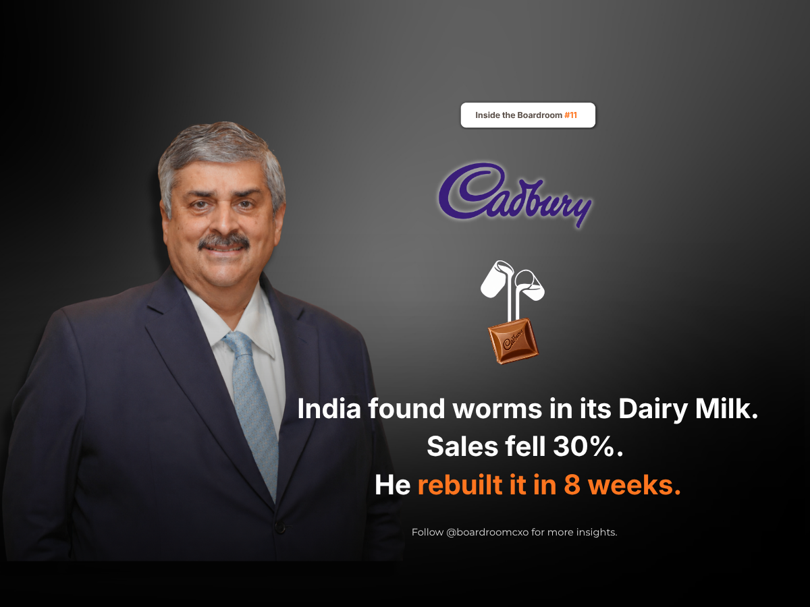

On 3 October 2003, a phone rang at Cadbury India's head office in Mumbai. A television reporter was asking for a comment on worms found in Dairy Milk bars.
Nobody had told them.
The regulator had already seized stock and briefed the press. Diwali was a month away and fresh chocolate was moving to 650,000 outlets across India. Cadbury held about 70 percent of the Indian chocolate market and sold 30 million Dairy Milk bars a month. Within a week, volumes fell 30 percent. In three weeks the company collected close to 1,000 hostile newspaper articles and around 120 television clips in ten languages.
Bharat Puri had been Managing Director for about a year. He later described what he told his team: "it's not about falling down, it's about how you get up."
The Facts Were on Cadbury's Side. That Was Not Enough.
Every investigation that followed found the same thing. The factories were clean. The problem was storage at the retail end, outside the company's control.
Most companies would have said exactly that, loudly, and waited for the news cycle to move on. It is the natural response, and often the correct one on the facts: if you did not cause the problem, say so and let the evidence carry the argument.
He did not.
Puri's read was that being right about the cause would not fix what the story had already done to trust in the product on the shelf. A consumer holding a chocolate bar during Diwali gifting season was not going to run the storage-chain forensics before deciding whether to buy it again.
Verify It Yourself Before You Ask Anyone Else to Believe You
He sent his own salespeople into their own markets to buy a thousand rupees of chocolate each and look for worms themselves. None of them found any, which is when he decided the packaging had to change anyway.
The proof that the product was clean was not the point where the response stopped. It was the point where the real fix started.
Cadbury spent about ₹15 crore on imported machinery and built a purity-sealed foil wrap in eight weeks, a process that normally takes six months. It ran a plain page called Facts about Cadbury in 55 publications in 11 languages. Then it put Amitabh Bachchan on camera, not to charm anyone, but to name the problem out loud.
Paying for Something You Did Not Break
The new packaging launched in January 2004. By June 2004, intention to buy and to gift Cadbury was back at pre-incident levels. Sales recovered fully within eight months.
The new wrapper cost 10 to 15 percent more per bar. The price on the pack never moved.
That last detail is the one worth sitting with. Cadbury had a clean audit, an external cause, and a legitimate defense. It still chose to absorb a permanent cost increase, on every bar, indefinitely, rather than pass it to the customer whose trust it was trying to rebuild. The company was not paying to fix a defect. It was paying to be believed again.
The Boardroom Read
Reputation is not defended by being right.
It is rebuilt by paying for something you did not break. Puri's sequence, verify personally before defending publicly, fix the visible product even when the audit clears you, disclose the problem by name instead of managing around it, and absorb the cost rather than pass it on, is a harder playbook to run than simply pointing at a clean factory report. It is also the reason Cadbury had a full recovery to point to eight months later instead of a legal victory nobody outside the industry remembers.
Frequently Asked Questions
What happened to Cadbury India in October 2003?
On 3 October 2003, a television reporter called Cadbury India's Mumbai office asking for comment on worms found in Dairy Milk bars, before the company had been informed. The regulator had already seized stock and briefed the press. Within a week, sales volumes fell 30 percent, and within three weeks the company drew close to 1,000 hostile newspaper articles and around 120 television clips in ten languages.
Who was Bharat Puri and what was his role during the crisis?
Bharat Puri had been Managing Director of Cadbury India for about a year when the crisis broke. He told his team the moment was about how you get up, not about falling down, and led the company's response through the peak Diwali selling season, when fresh chocolate was moving to 650,000 outlets across India.
Did Cadbury's factories cause the worm contamination?
No. Every investigation that followed found the factories were clean; the contamination was traced to storage conditions at the retail end, outside the company's direct control. Cadbury could have publicized that finding and waited for the news cycle to move on. Bharat Puri chose not to rely on that defense alone.
What did Bharat Puri do differently in response to the crisis?
Puri sent his own salespeople into the market to buy about a thousand rupees of chocolate each and inspect it themselves; none found worms. He then had Cadbury redesign the packaging anyway, spending about ₹15 crore on imported machinery to build a purity-sealed foil wrap in eight weeks, a process that normally takes six months. Cadbury also ran a plain-page ad titled Facts about Cadbury in 55 publications across 11 languages and put Amitabh Bachchan on camera to name the problem directly.
How much did the new Cadbury packaging cost, and who paid for it?
The purity-sealed foil wrap cost 10 to 15 percent more per bar to produce. Cadbury absorbed that cost; the price on the pack never moved.
How long did it take Cadbury to recover from the worm crisis?
The redesigned packaging launched in January 2004. By June 2004, intention to buy and to gift Cadbury chocolate was back at pre-incident levels, and sales recovered fully within eight months of the crisis breaking.
What is the leadership lesson from Bharat Puri's handling of the Cadbury worm crisis?
Being factually right was not enough to rebuild trust. Puri treated the crisis as a trust problem, not a factory problem, and paid to fix something the company had not technically broken, new packaging, public disclosure, personal verification, at Cadbury's own cost and without raising the price. Reputation was rebuilt by visible, costly action, not by winning the argument about fault.
Related Reading
Verghese Kurien Packed His Bags to Leave Anand. He Stayed Fifty Years and Built Amul.
Read → R · 02 Founder Leadership · July 2026Suresh Narayanan: The MD Who Walked Into the Maggi Ban
Read → R · 03 Founder Leadership · July 2026Sanjiv Mehta: The HUL Leader Who Never Forgot Bhopal
Read →Managing a crisis you did not cause, or hiring for the leader who can?
The operators who can verify a problem personally, fix it publicly, and absorb the cost without flinching are rare, and rarely visible until the moment they are needed most. We place leaders who have run this playbook before, not just talked about it.
Brief Us on a Mandate